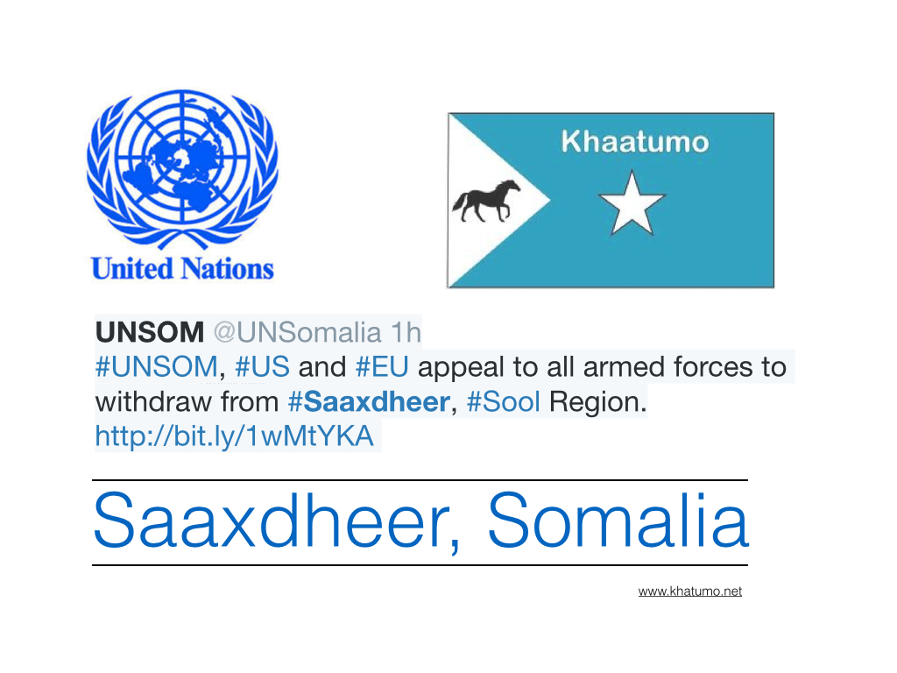

khatumo.net archive
Somalia: Limited Progress in Protecting Civilians
Published without a byline
January 30, 2015

(Nairobi, January 29, 2015) – The Somali government made limited progress in 2014 in protecting civilians from abusive armed forces in the country’s long conflict, Human Rights Watch said today in its World Report 2015. Displaced populations were most vulnerable to sexual violence and forced evictions, while the armed Islamist group Al-Shabaab targeted civilians for attack.“The Somali government missed key opportunities in 2014 to enact reforms that would curtail rights violations,” said Leslie Lefkow, deputy Africa director at Human Rights Watch. “Civilians again bore the brunt of the government’s failure to rein in abusive forces and make justice a priority.”
In the 656-page world report, its 25th edition, Human Rights Watch reviews human rights practices in more than 90 countries. In his introductory essay, Executive Director Kenneth Roth urges governments to recognize that human rights offer an effective moral guide in turbulent times, and that violating rights can spark or aggravate serious security challenges. The short-term gains of undermining core values of freedom and non-discrimination are rarely worth the long-term price.
In Somalia, proposed judicial reforms and other government plans to improve accountability for the security forces were hampered by political infighting and reshuffles in senior posts, tensions over federalism, and ongoing insecurity in government-controlled areas.
The government failed to protect hundreds of thousands of displaced people living in dire conditions around the capital, Mogadishu, who are at risk of forced evictions and other serious abuses. While the government endorsed a comprehensive plan to tackle the alarming levels of sexual violence across the country, implementation was slow and there was no basic protection for those most vulnerable to abuse.
The government prosecuted suspected Al-Shabaab members and supporters, as well as Somali military personnel, in military courts, though military court proceedings do not meet international fair trial standards. The court frequently imposes the death penalty, and at least 15 people were executed in 2014.
Fighting, insecurity, and threats to civilians remained rife throughout south-central Somalia, including in areas nominally under government control, Human Rights Watch said. Al-Shabaab attacked civilians and civilian infrastructure and carried out numerous targeted killings and executions. Government efforts to establish federal states, backed by the international community, fuelled deadly and destructive inter-clan fighting. Government forces became involved in the fighting in Lower Shabelle.
Some members of the African Union Mission in Somalia (AMISOM) sexually abused and exploited internally displaced women and girls in their bases in Mogadishu. Both the African Union and the troop-contributing countries Uganda and Burundi began investigations into these allegations.
“The Somali government has yet to demonstrate it is capable of providing basic protection and assistance to communities under its control,” Lefkow said. “The government and its international partners need to scale up efforts to address the widespread human rights violations across Somalia.”
To read Human Rights Watch’s World Report 2015 chapter on Somalia, please visit:
http://www.hrw.org/world-report/2015/country-chapters/somalia
For more Human Rights Watch reporting on Somalia, please visit:
http://www.hrw.org/africa/somal